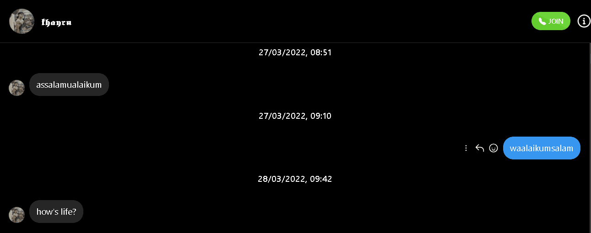

Chatan pertama kita

Huuuaaaa masi ingat ga sayang chatan pertama kitaaa setelah hampir lost contact??, wkwk lucu sekali mas yang ngechat adik pakai Assalamu'alaikum. eh taunya kita udah sejauh ini awwwww my loving disyyuu
♥♥♥♥♥♥♥♥♥♥